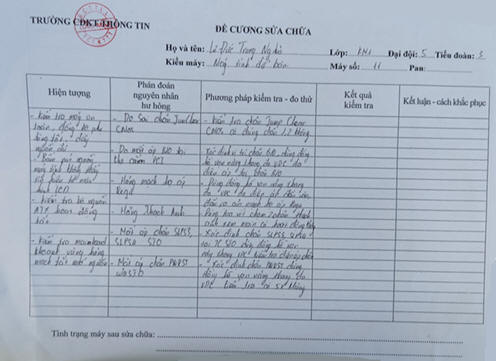

Sau khi thu thập đủ thông tin về hiện tượng, cần ghi chép vào sổ tổng hợp, căn cứ vào tình trạng thông tin máy đưa ra các nguyên nhân có thể gây ra lỗi, kết hợp với kinh nghiệm của bản thân khoanh vùng và đưa ra nguyên nhân gây ra lỗi chính xác nhất. Cuối cùng đưa cách khắc phục tối ưu theo từng nguyên nhân có tỷ lệ gây lỗi xếp từ cao xuống thấp. Ghi chép nội dung PAN bệnh vào đề cương sửa chữa, báo cáo chỉ huy các vấn đề liên quan và phương hướng giải quyết. Chờ chỉ huy thống nhất phương án giải quyết, nhận lệnh và tiến hành khắc phục sự cố.
